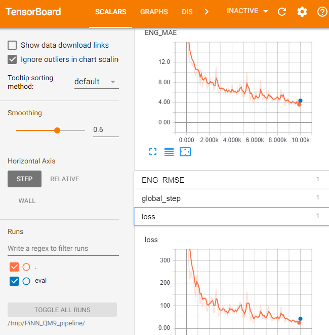

Optimizing the training¶
This notebooks covers more details on tweaking and optimizing the training process.
[1]:
import os, warnings
import tensorflow as tf
import matplotlib.pyplot as plt
from glob import glob
from pinn.io import load_qm9, sparse_batch
from pinn.networks import pinet
from pinn.utils import get_atomic_dress
from pinn.models import potential_model
os.environ['CUDA_VISIBLE_DEVICES'] = ''
index_warning = 'Converting sparse IndexedSlices'
warnings.filterwarnings('ignore', index_warning)
Optimizing the pipeline¶
Caching¶
Caching stores the decoded dataset in the memory.
[2]:
# For the purpose of testing, we use only 1000 samples from QM9
filelist = glob('/home/yunqi/datasets/QM9/dsgdb9nsd/*.xyz')[:1000]
dataset = lambda: load_qm9(filelist, split=1)
[3]:
d = dataset().repeat().apply(sparse_batch(100))
tensors = d.make_one_shot_iterator().get_next()
with tf.Session() as sess:
for i in range(10):
sess.run(tensors) # "Warm up" the graph
%timeit sess.run(tensors)
WARNING:tensorflow:From /home/yunqi/miniconda3/lib/python3.6/site-packages/tensorflow/python/data/ops/dataset_ops.py:429: py_func (from tensorflow.python.ops.script_ops) is deprecated and will be removed in a future version.
Instructions for updating:
tf.py_func is deprecated in TF V2. Instead, use
tf.py_function, which takes a python function which manipulates tf eager
tensors instead of numpy arrays. It's easy to convert a tf eager tensor to
an ndarray (just call tensor.numpy()) but having access to eager tensors
means `tf.py_function`s can use accelerators such as GPUs as well as
being differentiable using a gradient tape.
52.4 ms ± 701 µs per loop (mean ± std. dev. of 7 runs, 10 loops each)
This speed indicates the IO limit of our current setting.
Now let’s cache the dataset to the memory.
[4]:
d = dataset().cache().repeat().apply(sparse_batch(100))
tensors = d.make_one_shot_iterator().get_next()
with tf.Session() as sess:
for i in range(10):
sess.run(tensors) # "Warm up" the graph, dataset is cached here
%timeit sess.run(tensors)
285 µs ± 10.5 µs per loop (mean ± std. dev. of 7 runs, 1000 loops each)
Preprocessing¶
You might also see a notable difference in the performance with and without preprocessing. This is especially helpful when you are training with GPUs.
[5]:
d = dataset().cache().repeat().apply(sparse_batch(100))
tensors = d.make_one_shot_iterator().get_next()
output = pinet(tensors)
with tf.Session() as sess:
sess.run(tf.global_variables_initializer())
for i in range(10):
sess.run(output)
%timeit sess.run(output)
WARNING: The TensorFlow contrib module will not be included in TensorFlow 2.0.
For more information, please see:
* https://github.com/tensorflow/community/blob/master/rfcs/20180907-contrib-sunset.md
* https://github.com/tensorflow/addons
If you depend on functionality not listed there, please file an issue.
WARNING:tensorflow:From /home/yunqi/work/pinn_proj/code/PiNN_dev/pinn/networks/pinet.py:76: dense (from tensorflow.python.layers.core) is deprecated and will be removed in a future version.
Instructions for updating:
Use keras.layers.dense instead.
WARNING:tensorflow:From /home/yunqi/miniconda3/lib/python3.6/site-packages/tensorflow/python/framework/op_def_library.py:263: colocate_with (from tensorflow.python.framework.ops) is deprecated and will be removed in a future version.
Instructions for updating:
Colocations handled automatically by placer.
37.4 ms ± 2.01 ms per loop (mean ± std. dev. of 7 runs, 10 loops each)
[6]:
tf.reset_default_graph()
pre_fn = lambda tensors: pinet(tensors, preprocess=True)
d = dataset().cache().repeat().apply(sparse_batch(100)).map(pre_fn, 8)
tensors = d.make_one_shot_iterator().get_next()
output = pinet(tensors)
with tf.Session() as sess:
sess.run(tf.global_variables_initializer())
for i in range(10):
sess.run(output)
%timeit sess.run(output)
27.2 ms ± 1.4 ms per loop (mean ± std. dev. of 7 runs, 10 loops each)
You can even cache the preprocessed data.
[7]:
tf.reset_default_graph()
pre_fn = lambda tensors: pinet(tensors, preprocess=True)
d = dataset().apply(sparse_batch(100)).map(pre_fn).cache().repeat()
tensors = d.make_one_shot_iterator().get_next()
output = pinet(tensors)
with tf.Session() as sess:
sess.run(tf.global_variables_initializer())
for i in range(10):
sess.run(output)
%timeit sess.run(output)
27.1 ms ± 948 µs per loop (mean ± std. dev. of 7 runs, 10 loops each)
Atomic dress¶
Scaling and aligning the labels can enhance the performance of the models, and avoid numerical instability. For datasets like QM9, we can assign an atomic energy to each atom according to their elements to approximate the total energy. This can be done by a simple linear regression. We provide a simple tool to generate such “atomic dresses”.
[8]:
filelist = glob('/home/yunqi/datasets/QM9/dsgdb9nsd/*.xyz')
dataset = lambda: load_qm9(filelist, split={'train':8, 'test':2})
dress, error = get_atomic_dress(dataset()['train'],[1,6,7,8,9],max_iter=2000)
Applying the atomic dress converts the QM9 energies to a “normal” distribution. It also gives us some ideas about the relative distribution of energies, and how much our neural network improves from the naive guess of the atomic dress.
After applying the atomic dress, it turns out that the distribution of our training set is only about 0.05 Hartree, or 30 kcal/mol.
[9]:
plt.hist(error,50)
dress
[9]:
{1: -0.6039418437152411,
6: -38.07358460885415,
7: -54.75154708631868,
8: -75.22503739913694,
9: -99.87073186940984}
Training with the optimized pipeline¶
[10]:
params = {'model_dir': '/tmp/PiNet_QM9_pipeline',
'network': 'pinet',
'network_params': {
'atom_types':[1, 6, 7, 8, 9],
},
'model_params': {
'learning_rate': 1e-3, # Relatively large learning rate
'e_scale': 627.5, # Here we scale the model to kcal/mol
'e_dress': dress
}}
# The logging behavior of estimator can be controlled here
config = tf.estimator.RunConfig(log_step_count_steps=500)
# Preprocessing the datasets
pre_fn = lambda tensors: pinet(tensors, preprocess=True, **params['network_params'])
train = lambda: dataset()['train'].cache().repeat().shuffle(1000).apply(sparse_batch(100)).map(pre_fn, 8)
test = lambda: dataset()['test'].cache().repeat().apply(sparse_batch(100)).map(pre_fn, 8)
# Running specs
train_spec = tf.estimator.TrainSpec(input_fn=train, max_steps=1e4)
eval_spec = tf.estimator.EvalSpec(input_fn=test, steps=100)
[11]:
model = potential_model(params, config=config)
tf.estimator.train_and_evaluate(model, train_spec, eval_spec)
INFO:tensorflow:Using config: {'_model_dir': '/tmp/PiNet_QM9_pipeline', '_tf_random_seed': None, '_save_summary_steps': 100, '_save_checkpoints_steps': None, '_save_checkpoints_secs': 600, '_session_config': allow_soft_placement: true
graph_options {
rewrite_options {
meta_optimizer_iterations: ONE
}
}
, '_keep_checkpoint_max': 5, '_keep_checkpoint_every_n_hours': 10000, '_log_step_count_steps': 500, '_train_distribute': None, '_device_fn': None, '_protocol': None, '_eval_distribute': None, '_experimental_distribute': None, '_service': None, '_cluster_spec': <tensorflow.python.training.server_lib.ClusterSpec object at 0x7fd1b8213240>, '_task_type': 'worker', '_task_id': 0, '_global_id_in_cluster': 0, '_master': '', '_evaluation_master': '', '_is_chief': True, '_num_ps_replicas': 0, '_num_worker_replicas': 1}
INFO:tensorflow:Not using Distribute Coordinator.
INFO:tensorflow:Running training and evaluation locally (non-distributed).
INFO:tensorflow:Start train and evaluate loop. The evaluate will happen after every checkpoint. Checkpoint frequency is determined based on RunConfig arguments: save_checkpoints_steps None or save_checkpoints_secs 600.
INFO:tensorflow:Calling model_fn.
Total number of trainable variables: 12112
WARNING:tensorflow:From /home/yunqi/miniconda3/lib/python3.6/site-packages/tensorflow/python/ops/math_ops.py:3066: to_int32 (from tensorflow.python.ops.math_ops) is deprecated and will be removed in a future version.
Instructions for updating:
Use tf.cast instead.
INFO:tensorflow:Done calling model_fn.
INFO:tensorflow:Create CheckpointSaverHook.
INFO:tensorflow:Graph was finalized.
INFO:tensorflow:Running local_init_op.
INFO:tensorflow:Done running local_init_op.
INFO:tensorflow:Saving checkpoints for 0 into /tmp/PiNet_QM9_pipeline/model.ckpt.
INFO:tensorflow:loss = 901.2491, step = 1
INFO:tensorflow:global_step/sec: 12.536
INFO:tensorflow:loss = 229.9105, step = 501 (39.888 sec)
INFO:tensorflow:global_step/sec: 14.8683
INFO:tensorflow:loss = 177.13615, step = 1001 (33.630 sec)
INFO:tensorflow:global_step/sec: 16.445
INFO:tensorflow:loss = 140.27083, step = 1501 (30.403 sec)
INFO:tensorflow:global_step/sec: 16.7731
INFO:tensorflow:loss = 101.188255, step = 2001 (29.810 sec)
INFO:tensorflow:global_step/sec: 16.0293
INFO:tensorflow:loss = 75.46889, step = 2501 (31.191 sec)
INFO:tensorflow:global_step/sec: 16.4766
INFO:tensorflow:loss = 38.773956, step = 3001 (30.347 sec)
INFO:tensorflow:global_step/sec: 15.9602
INFO:tensorflow:loss = 32.056786, step = 3501 (31.328 sec)
INFO:tensorflow:global_step/sec: 16.4402
INFO:tensorflow:loss = 53.077564, step = 4001 (30.414 sec)
INFO:tensorflow:global_step/sec: 16.0252
INFO:tensorflow:loss = 69.25752, step = 4501 (31.201 sec)
INFO:tensorflow:global_step/sec: 15.8234
INFO:tensorflow:loss = 53.59968, step = 5001 (31.598 sec)
INFO:tensorflow:global_step/sec: 16.2337
INFO:tensorflow:loss = 52.223156, step = 5501 (30.800 sec)
INFO:tensorflow:global_step/sec: 16.1021
INFO:tensorflow:loss = 39.21725, step = 6001 (31.052 sec)
INFO:tensorflow:global_step/sec: 16.0505
INFO:tensorflow:loss = 33.32097, step = 6501 (31.151 sec)
INFO:tensorflow:global_step/sec: 15.9751
INFO:tensorflow:loss = 31.709461, step = 7001 (31.299 sec)
INFO:tensorflow:global_step/sec: 16.0916
INFO:tensorflow:loss = 54.991886, step = 7501 (31.072 sec)
INFO:tensorflow:global_step/sec: 16.2315
INFO:tensorflow:loss = 46.050472, step = 8001 (30.804 sec)
INFO:tensorflow:global_step/sec: 16.2089
INFO:tensorflow:loss = 47.904716, step = 8501 (30.848 sec)
INFO:tensorflow:global_step/sec: 16.0277
INFO:tensorflow:loss = 33.581352, step = 9001 (31.196 sec)
INFO:tensorflow:Saving checkpoints for 9498 into /tmp/PiNet_QM9_pipeline/model.ckpt.
INFO:tensorflow:Calling model_fn.
WARNING:tensorflow:From /home/yunqi/miniconda3/lib/python3.6/site-packages/tensorflow/python/ops/metrics_impl.py:363: to_float (from tensorflow.python.ops.math_ops) is deprecated and will be removed in a future version.
Instructions for updating:
Use tf.cast instead.
INFO:tensorflow:Done calling model_fn.
INFO:tensorflow:Starting evaluation at 2019-08-12T21:59:19Z
INFO:tensorflow:Graph was finalized.
WARNING:tensorflow:From /home/yunqi/miniconda3/lib/python3.6/site-packages/tensorflow/python/training/saver.py:1266: checkpoint_exists (from tensorflow.python.training.checkpoint_management) is deprecated and will be removed in a future version.
Instructions for updating:
Use standard file APIs to check for files with this prefix.
INFO:tensorflow:Restoring parameters from /tmp/PiNet_QM9_pipeline/model.ckpt-9498
INFO:tensorflow:Running local_init_op.
INFO:tensorflow:Done running local_init_op.
INFO:tensorflow:Evaluation [10/100]
INFO:tensorflow:Evaluation [20/100]
INFO:tensorflow:Evaluation [30/100]
INFO:tensorflow:Evaluation [40/100]
INFO:tensorflow:Evaluation [50/100]
INFO:tensorflow:Evaluation [60/100]
INFO:tensorflow:Evaluation [70/100]
INFO:tensorflow:Evaluation [80/100]
INFO:tensorflow:Evaluation [90/100]
INFO:tensorflow:Evaluation [100/100]
INFO:tensorflow:Finished evaluation at 2019-08-12-21:59:30
INFO:tensorflow:Saving dict for global step 9498: METRICS/E_LOSS = 34.67476, METRICS/E_MAE = 4.090528, METRICS/E_RMSE = 5.888528, METRICS/TOT_LOSS = 34.67476, global_step = 9498, loss = 34.67476
INFO:tensorflow:Saving 'checkpoint_path' summary for global step 9498: /tmp/PiNet_QM9_pipeline/model.ckpt-9498
INFO:tensorflow:global_step/sec: 11.3633
INFO:tensorflow:loss = 28.352766, step = 9501 (44.000 sec)
INFO:tensorflow:Saving checkpoints for 10000 into /tmp/PiNet_QM9_pipeline/model.ckpt.
INFO:tensorflow:Skip the current checkpoint eval due to throttle secs (600 secs).
INFO:tensorflow:Calling model_fn.
INFO:tensorflow:Done calling model_fn.
INFO:tensorflow:Starting evaluation at 2019-08-12T22:00:03Z
INFO:tensorflow:Graph was finalized.
INFO:tensorflow:Restoring parameters from /tmp/PiNet_QM9_pipeline/model.ckpt-10000
INFO:tensorflow:Running local_init_op.
INFO:tensorflow:Done running local_init_op.
INFO:tensorflow:Evaluation [10/100]
INFO:tensorflow:Evaluation [20/100]
INFO:tensorflow:Evaluation [30/100]
INFO:tensorflow:Evaluation [40/100]
INFO:tensorflow:Evaluation [50/100]
INFO:tensorflow:Evaluation [60/100]
INFO:tensorflow:Evaluation [70/100]
INFO:tensorflow:Evaluation [80/100]
INFO:tensorflow:Evaluation [90/100]
INFO:tensorflow:Evaluation [100/100]
INFO:tensorflow:Finished evaluation at 2019-08-12-22:00:13
INFO:tensorflow:Saving dict for global step 10000: METRICS/E_LOSS = 36.76002, METRICS/E_MAE = 4.2175436, METRICS/E_RMSE = 6.0630045, METRICS/TOT_LOSS = 36.760036, global_step = 10000, loss = 36.760036
INFO:tensorflow:Saving 'checkpoint_path' summary for global step 10000: /tmp/PiNet_QM9_pipeline/model.ckpt-10000
INFO:tensorflow:Loss for final step: 34.19862.
[11]:
({'METRICS/E_LOSS': 36.76002,
'METRICS/E_MAE': 4.2175436,
'METRICS/E_RMSE': 6.0630045,
'METRICS/TOT_LOSS': 36.760036,
'loss': 36.760036,
'global_step': 10000},
[])
Monitoring¶
tensorboard --logdir /tmp, and you can probably see this.
Parallelization with tf.Estimator¶
The estimator api makes it extremely easy to train on multiple GPUs.
[12]:
# suppose you have two cards
distribution = tf.contrib.distribute.MirroredStrategy(num_gpus=2)
config = tf.estimator.RunConfig(train_distribute=distribution)
model = potential_model(params, config=config)
INFO:tensorflow:Device is available but not used by distribute strategy: /device:CPU:0
INFO:tensorflow:Device is available but not used by distribute strategy: /device:XLA_CPU:0
WARNING:tensorflow:Not all devices in `tf.distribute.Strategy` are visible to TensorFlow.
INFO:tensorflow:Initializing RunConfig with distribution strategies.
INFO:tensorflow:Not using Distribute Coordinator.
INFO:tensorflow:Using config: {'_model_dir': '/tmp/PiNet_QM9_pipeline', '_tf_random_seed': None, '_save_summary_steps': 100, '_save_checkpoints_steps': None, '_save_checkpoints_secs': 600, '_session_config': allow_soft_placement: true
graph_options {
rewrite_options {
meta_optimizer_iterations: ONE
}
}
, '_keep_checkpoint_max': 5, '_keep_checkpoint_every_n_hours': 10000, '_log_step_count_steps': 100, '_train_distribute': <tensorflow.contrib.distribute.python.mirrored_strategy.MirroredStrategy object at 0x7fd0dc1b5cc0>, '_device_fn': None, '_protocol': None, '_eval_distribute': None, '_experimental_distribute': None, '_service': None, '_cluster_spec': <tensorflow.python.training.server_lib.ClusterSpec object at 0x7fd0dc46ec50>, '_task_type': 'worker', '_task_id': 0, '_global_id_in_cluster': 0, '_master': '', '_evaluation_master': '', '_is_chief': True, '_num_ps_replicas': 0, '_num_worker_replicas': 1, '_distribute_coordinator_mode': None}
Conclusions¶
Congratulations! You can now train atomic neural networks with state-of-the-art accuracy and speed.
But there’s more. With PiNN, the components of ANNs are modulized. Read the following notebooks to see how you can build your own ANN.